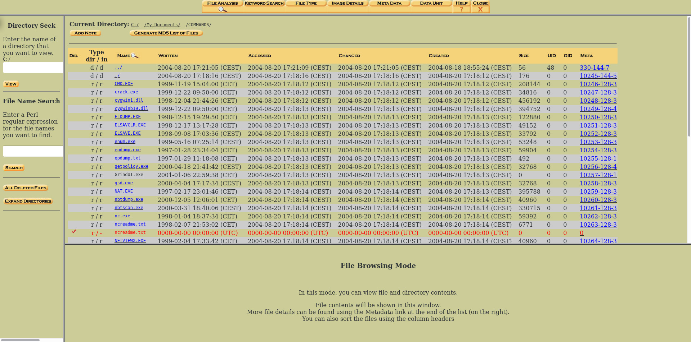

Nach der Beschlagnahme
Jetzt werden die Cops oder ein:e Sachverständige:r sich daran machen deine Daten auszulesen und “gerichtssicher” zu machen. Wenn du deinen Kram anständig verschlüsselt hast werden sie dabei nicht weit kommen. Andernfalls werden die Daten akribisch durchsucht. Den dabei verwendeten Forensikprogrammen entgeht kaum etwas und selbst gelöschte Daten können wiederhergestellt werden.
Auch gesperrte Handys können mit der Spezialsoftware und -hardware ausgelesen werden. Die Funde werden mit einer Prüfsumme versehen und katalogisiert, so dass sie vor Gericht als Beweis verwendet werden können.
Wird das Verfahren irgendwann eingestellt bekommst du deine beschlagnahmten Sachen zurück. Das kann aber dauern und es soll auch schon vorgekommen sein, dass Festplatten die nicht entschlüsselt werden konnten bei der Rückgabe auf einmal leer waren.

| « Hausdurchsuchung | ⇑ Themen | Kommunikationsüberwachung » |